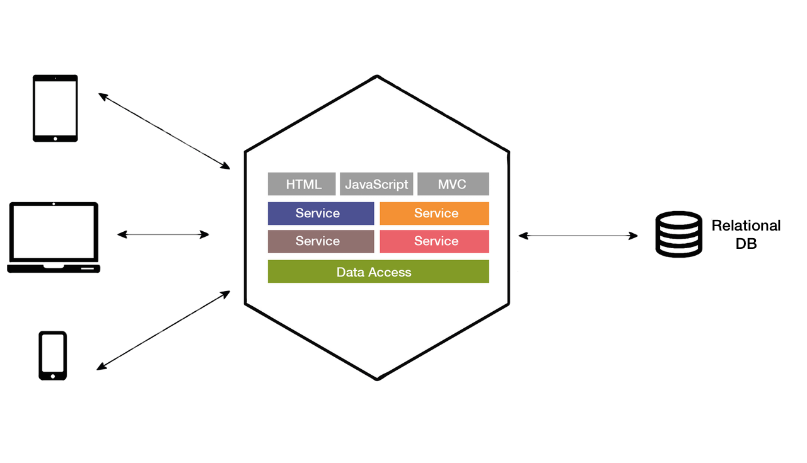
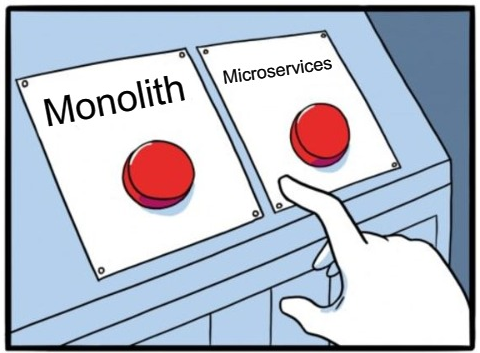
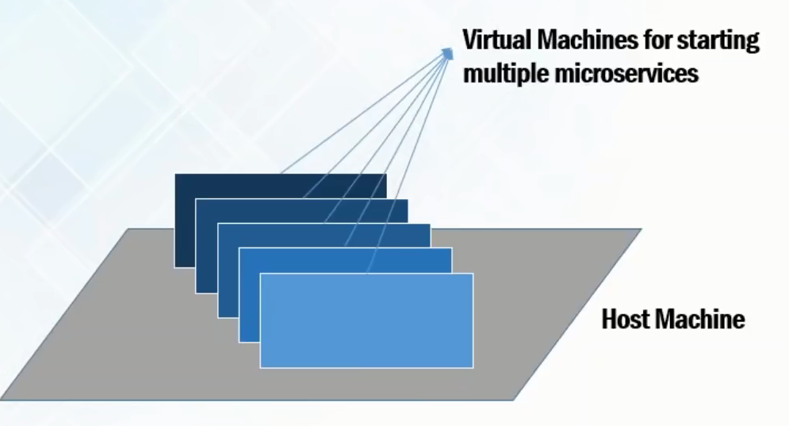

Microservices and Docker
Abdullo Magrupov
https://github.com/abdullo-magrupovAgenda
- Monolith
- Microservices
- Docker
Monolithic architecture
What is wrong with monolith?
Microservice architecture

What to choose?
Are microservices perfect?
Docker is the solution!

Why not virtual machines!

Virtual machines vs Docker
